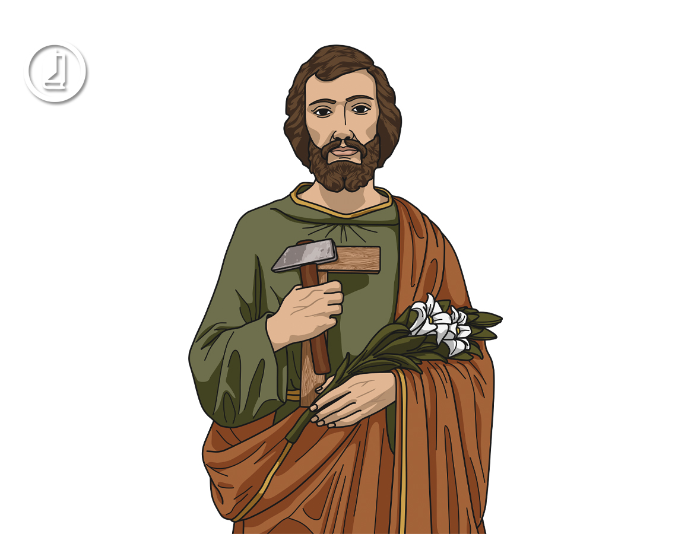

Un camino de oración para encomendar tu trabajo,
tu familia y tus intenciones al glorioso custodio
de la Sagrada Familia.
Marca cada día al completarlo. Tu avance se guarda automáticamente en este dispositivo.
Recitar estas oraciones al inicio de cada día de la novena.
Por la señal de la Santa Cruz, de nuestros enemigos líbranos
Señor, Dios nuestro.
En el nombre del Padre, del Hijo y del Espíritu Santo.
Amén.
¡Oh gloriosísimo Padre de Jesús! Esposo de
María. Protector de la Iglesia, a quien el Padre Eterno confió
el cuidado de orientar, regir y defender en la tierra a la
Sagrada Familia; protégenos también a nosotros, que
pertenecemos, como fieles creyentes, a la santa familia de tu
Hijo que es la Iglesia, y alcánzanos los bienes necesarios de
esta vida, y sobre todo los auxilios espirituales para la vida
eterna.
Alcánzanos especialmente estas tres gracias: la de no cometer
jamás ningún pecado mortal, principalmente el odio grave y
deliberado hacia otros; la de un sincero amor y devoción a Jesús
y María, y la de una buena muerte, recibiendo bien los últimos
Sacramentos. Concédenos además la gracia especial que te pedimos
cada uno en esta novena.
(Pida con fervor y confianza la gracia que desea
obtener)
¡Oh querido San José! mi bendito escolta y
guardián, el más generoso y bondadoso hombre con un corazón tan
noble y un alma armónica y gloriosa llena de afecto. Acudo a ti
en mi agobio para pedir tu auxilio. Pon tus amorosas manos en mi
crítico problema laboral y solicita al Dios creador que con su
bondad inagotable esparza su Espíritu Santo sobre mí y que por
su majestuosa disposición me salve y dé solución a tan
desesperada situación.
San José, jefe y dirigente de la Sagrada Familia, el más
confiado y obediente hacia la voluntad de Dios, con una
fidelidad intachable como esposo y el más honorario padre
adoptivo, que con el sudor y rasguños de tus manos diste
alimento a tu familia, por el profundo amor que guardaste al
Divino Niño y a la Virgen María, te imploro para que utilices tu
poder intercesor y estés presente en mis complicados problemas y
me liberes de esta desesperación que me agobia.
Pide por mí para que las puertas me sean abiertas y consiga
urgentemente el empleo o negocio propio para que me dé sustento
y me ayude a salir de tan grave complicación. Un empleo digno,
honorable, estable y bien pagado con el que sea capaz de hacerme
cargo de los gastos de mi familia, un trabajo en el que emplee
mis habilidades, que me ayude a explorar y experimentar, para
aumentar mi desarrollo como ser humano y me permita seguir
teniendo una relación con mi Dios todopoderoso.
Tú, que lo inalcanzable lo pones al alcance de nosotros. Haz que
prontamente mis motivaciones y esfuerzos por querer seguir
adelante se vean premiados con un trabajo que tenga la capacidad
de traerme riquezas abundantes y prosperidad continua.
¡Oh, mi querido San José! no me defraudes.
Comunícate con Dios para que logre conseguir lo que con
sencillez y con mucha fe de todo corazón pido:
(Pida con fervor y confianza la gracia que desea
obtener)
San José, alabado y querido pastor mío. Tú que eres quien
reparte las dichas del Rey de Reyes, déjame aprender de ti a
amar, adorar, alabar y ser fiel servidor de nuestro Dios
creador, hijo Salvador y Espíritu Santo glorificador. Protégeme,
resguárdame, ayúdame, cuídame y haz descender de los Cielos lo
que tan urgentemente necesito. Dame fuerza ante tanta hambruna y
decadencia; dame cuidado y silencio para salir exitoso de las
desesperanzas y complicaciones de mi vida; y antes que nada,
bríndame tu infinita seguridad con la finalidad de que, motivado
por ti y dispuesto a seguir tus pasos, sea capaz de vivir
armónicamente y en caridad con las demás personas, para así
lograr alcanzar la perpetua alegría que sólo la patria celestial
sabe dar. Por Jesús, mi Señor y Salvador.
Amén.
Recitar al finalizar la oración de cada día.
¡Oh custodio y padre de Vírgenes San José! a cuya
fiel custodia fueron encomendadas la misma inocencia de Cristo
Jesús y la Virgen de las vírgenes María, por estas dos
queridísimas prendas Jesús y María, te ruego y suplico me
alcances, que preservado yo de toda impureza, sirva siempre
castísimamente con alma limpia, corazón puro y cuerpo casto a
Jesús y a María. Amén.
Jesús, José y María, les doy mi corazón y el alma mía.
Jesús, José y María, asístanme en mi última agonía.
Jesús, José y María, con ustedes descanse en paz el alma mía.
Tenía el mismo Jesús, al empezar su vida pública, cerca de treinta
años, hijo, según se pensaba de José.
San José, ruega por nosotros.
(Para que seamos dignos de alcanzar las promesas de
Jesucristo)
¡Oh Dios! que con inefable providencia te dignaste escoger al bienaventurado José por Esposo de tu Madre Santísima; concédenos que, pues le veneramos como protector en la tierra, merezcamos tenerle como protector en los cielos. ¡Oh Dios! que vives y reinas por los siglos de los siglos. Amén.
Padre Nuestro que estás en los cielos,
santificado sea tu Nombre, venga a nosotros tu Reino, hágase tu
voluntad así en la tierra como en el cielo. Danos hoy nuestro pan
de cada día, perdona nuestras ofensas como también nosotros
perdonamos a los que nos ofenden, no nos dejes caer en tentación y
líbranos del mal. Amén.
Dios te salve, María, llena eres de gracia, el
Señor es contigo, bendita tú eres entre todas las mujeres, y
bendito es el fruto de tu vientre, Jesús. Santa María, Madre de
Dios, ruega por nosotros pecadores ahora y en la hora de nuestra
muerte. Amén.
Gloria al Padre, al Hijo y al Espíritu Santo.
Como era en el principio, ahora y siempre, por los siglos de los
siglos. Amén.
(Rezar tres veces consecutivas cada oración)
V. Lo nombró administrador de su casa.
R. Y señor de todas sus posesiones.
¡Oh Dios! que con inefable providencia te dignaste
elegir a San José para Esposo de tu Santísima Madre; te rogamos nos
concedas tenerlo como Intercesor en el cielo, ya que lo veneramos
como protector en la tierra. Tú, que vives y reinas por los siglos
de los siglos. Amén.
(Rezar un Padre Nuestro, un Ave María y un Gloria)